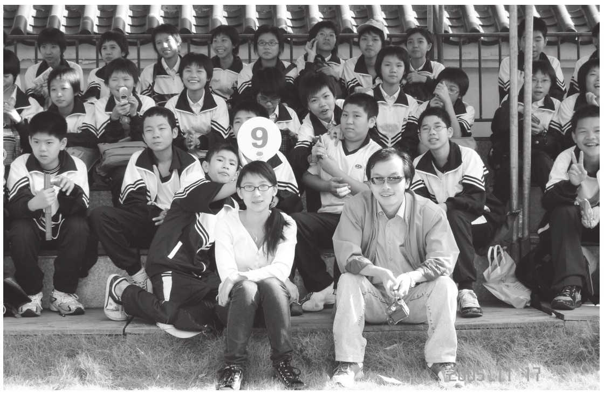

班主任是学校教师的骨干力量，一支强有力的高素质班主任队伍是学校教育教学工作得以落实的保证。班主任是个“准专业”，然而作为一名教师，他的身份第一位是学科教师，其次才是班主任。《中共中央国务院关于进一步加强和改进未成年人思想道德建设的若干意见》中要求：“学校要完善班主任工作制度，高度重视班主任工作，选派思想素质好、业务水平高、奉献精神强的优秀教师担任班主任。”《教育学》对班主任工作这样进行描述：“班主任的基本职责是组织和培养良好的班集体，对全班每个学生的发展全面负责。”
然而，班主任工作的现状是什么呢？“目前大多数老师都是把‘教书’当成了主业，而把班主任工作作为一种‘副业’而存在的。”换句话说，学校的班主任都是一批临时被“点将”的“临时工”，而不是一批拥有专业知识和技能的专门人才。
班华教授在《班主任专业化的理论与实践》一书中指出，班主任专业化是教师专业化的一个特殊的方面。班主任专业的特殊性可以概括为两个方面：一是从教育劳动的性质看，主要是精神劳动，是与学生心灵沟通，促进其精神发展的精神活动；二是班主任有其特殊的教育操作系统即发展性班级教育系统。如何建立一支专业化的班主任队伍？如何让学校的班主任工作走向专业化？首先，应该明确的是，班主任专业化，并不意味工作岗位的专门化；而是意味着班主任工作是一门专门的学问，需要走专业化的成长之路：专业认同—专业发展—专业自觉—研究与写作（反思与成长）。
截至2020年从教15载，我做了11年的班主任，与4届学生一起走过了如梦似幻的青春岁月。个人也被评为学校优秀班主任、后进生教育转化先进个人、集团优秀班主任、东莞市优秀班主任、广东省优秀德育工作者等诸多荣誉，所带班级也长期获评优秀班级、文明班级、优胜班级等荣誉。更让人欣慰的是，我所带的学生积极向上、热爱生活、感恩励志，现在已经有近30名学生在清华、北大就读或毕业，还有许多学生就读或毕业于国内外知名高校，成为更好的自己。还有一大批毕业生，走向社会，他们遵纪守法，成为合格的公民，为社会贡献着自己应有的力量和价值。
回首自己的班主任工作经历以及成长历程，我认为有以下几点可以值得回味和分享。
一、源于对班主任工作的热爱
有的老师可能认为班主任工作事务烦琐、工作压力大，但我却非常热爱班主任工作。那种长时间与学生“腻歪”在一起，感受着他们的成长与进步，与他们一起去品味成长的喜怒哀乐、酸甜苦辣，为了班级荣誉一起拼搏呐喊的感觉，总让人回味。每每看到一个受益于自己教育的学生，改掉了身上的坏习惯，矫正了自己的一些狭隘的观念和认识，享受着学习生活、体验着人生成长，我觉得那就是我的幸福。看到一批批学生不断地成长、成熟、离开、高飞，我觉得那就是我作为班主任最大的荣耀和成就。当然，对班主任工作的热爱，本质上也是对学生的爱。唯有基于爱的教育，才能绽放美好。
二、源于对班主任工作艺术的学习和思考
客观上来讲，当我进入职业生涯时，我并没有接受过专业的班主任工作学习和培训（岗前培训太过短暂，没有实战训练，可以忽略不计）。如何让自己迅速适应并能够在班主任工作中做出成绩？学习就是不二法宝。首先是向身边的有经验的班主任学习，主动请教、积极模仿、不断总结；其次是向专家学习，从阅读中寻找班主任工作的智慧，比如魏书生的《班主任工作漫谈》，万玮的《班主任兵法》，闫学的《跟苏霍姆林斯基学做班主任》，《正面管教》系列、《第56号教室的奇迹》系列、《非暴力沟通》系列、《名师工程教育细节》系列丛书等。
三、源于对班主任工作的总结与提炼
波斯纳曾提出一个教师成长的简要公式：经验＋反思＝成长，并指出，“没有反思的经验是狭隘的经验，至多只能形成肤浅的知识，如果教师仅仅满足于获得经验而不对经验进行深入的思考，那么他的发展将大受限制”。北京教育学院季苹教授也讲过：“教师专业发展的方式是有效专业能力和习惯的建构，包括长时间思考一个问题的专业能力和习惯；不断进行自我诊断的专业能力和习惯；不断进行学生调研的专业能力和习惯；不断进行嵌入式学习的专业能力和习惯。”在班主任工作中，我比较热爱写班主任日记，一部分发表在自己的网络博客上，一部分完善成为班主任论文参与学校的评比或发表在一些公开刊物上。
四、源于积极参加班主任能力大赛的磨砺
2010年，东莞市推出了班主任专业能力大赛，我当时所在的学校东华中学第一次报名参赛。我作为学校派出的第一位参赛选手，当时没有任何的备赛经验，也没有任何的导师指导，自己胡乱摸索着准备了一气。所幸的是，“首战用我，用我必胜”，我也以优异的成绩夺得了该项赛事的一等奖。此赛过后，无论是东莞市还是我所在的学校，都将班主任专业能力大赛当作提升班主任队伍专业素养的一项常规赛事。我也发生了巨大的角色转变，成了此项赛事的组织者、指导者、导师团、顾问团。在带领一批又一批选手参加这项赛事的准备过程中，我也在反复地思考和淬炼自己的班级管理心得。在不同的虚拟情境中进行班主任实战演练，帮助了参赛选手的同时，自己也在不断提高。
五、源于对学生的理解和共情
窦桂梅老师说：“我常常阅读名著……我也天天阅读孩子，我强烈地感受到自己便是在阅读和欣赏人类最伟大的生命的杰作。”教育要想取得成功、达到预期效果，不能缺少理解。班主任就是要与学生相互发现、相互理解、相互激励、相互感悟、相互涌动、相互创造、共同发展、共同成长、共同收获。由于成人世界与儿童世界不同，学会理解又谈何容易？要相互理解就应当学会尊重，学会与学生平等交往，相互袒露胸怀，相互发现，相互促进。学会理解，就要如李吉林老师说的“用儿童的眼睛看世界”，学会换位思考，学会将心比心，这样才能懂得学生，走进学生心灵，从而让学生走近自己、懂得自己、发现自己。要尊重所有学生，包括学习困难的学生、有明显弱点的学生、身心有某种“缺陷”的学生。学会关心和理解学生，学会尊重学生、发现学生、欣赏学生，去感受尊重和发现的美好。
班主任更应把做人的教育放在第一位。对于班主任专业化而言，修养比知识更重要，人品比成绩更重要。班主任所从事的是以德育德、以心育心、以人格育人格、用灵魂影响灵魂的精神劳动。精神关怀是班主任应有的重要品质。
有人说，没有当过班主任的教师生涯，是不完整的教师生涯。班主任工作是一种职业，是一种事业，是一种情怀，是一种追求，是一种信仰。在新课程理念和教师专业化发展的背景下，班主任工作也必须走向专业化，由教师“副业”向“主业”转化，做专业的班主任，做幸福的班主任。因为只有专业才能成就“专业”，只有幸福的班主任才能培养出幸福的学生。既然我们选择了班主任这个职业，那就是选择了一份责任，一份辛苦，一种付出，一种收获，我们就应该用信念去点燃它，用青春去浇灌它，用生命去热爱它。

作者（前排右数第一位）和他的第一批学生